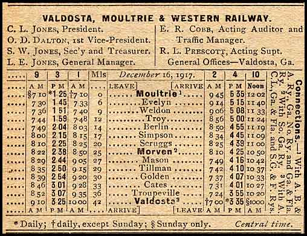
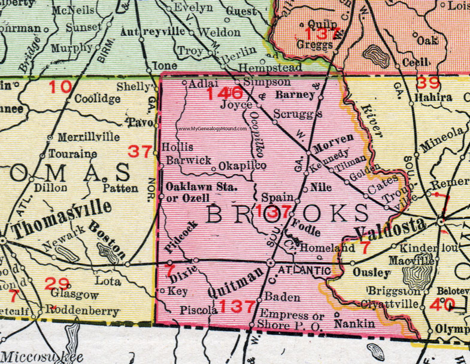
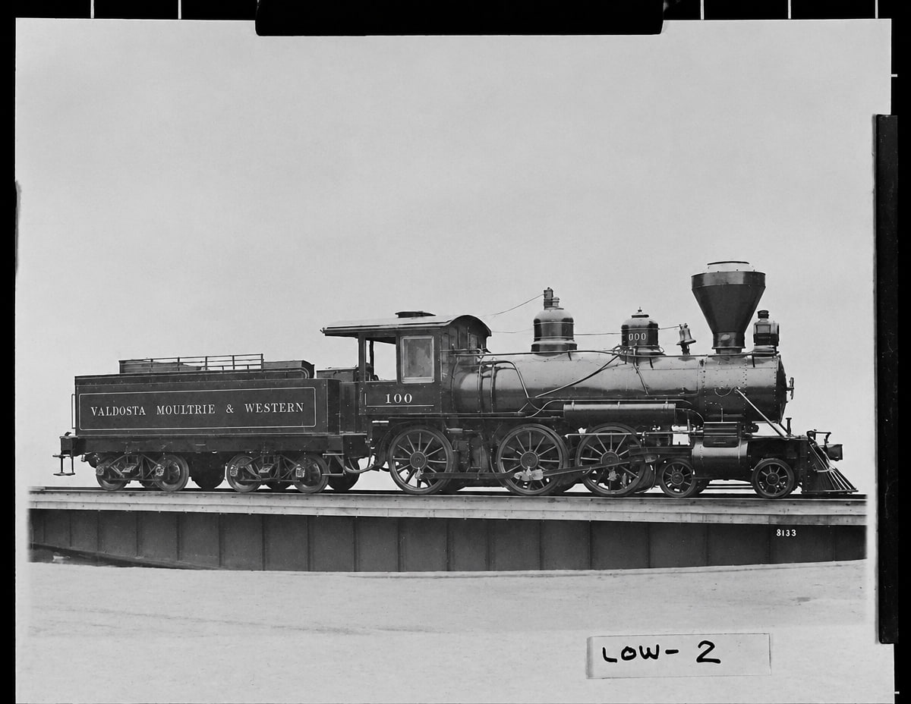

The Valdosta, Moultrie and Western Railway
The Valdosta, Moultrie and Western was a short-lived railroad between Valdosta and Moultrie. It did not run through Barney. At Morven, however, passengers could transfer between VM&W trains and the South Georgia Railway for Barney.[1-6]
The line began operating in 1909 as the Valdosta, Moultrie and Western Railroad Company. After foreclosure, a successor corporation called the Valdosta, Moultrie and Western Railway was formed in March 1917. Contemporary records therefore use both “Railroad” and “Railway,” usually abbreviated VM&W. “Valdosta, Moultrie and Westward,” found in some later accounts, was not its name.[10][32]
A new line across South Georgia
In November 1908, newspapers reported a charter application for a roughly forty-mile railroad from Valdosta to Moultrie through Lowndes, Brooks, and Colquitt counties. The application sought a 101-year charter and listed $100,000 in capital. The forty-mile figure described the proposed route; the completed main line measured 41.80 miles.[7][8][10][26]
Barney tried to persuade the promoters to choose a different route. In a letter dated December 16 and published three days later under the headline “Barney Wants to Reach Us,” a writer signing only as “H. B.” asked the men behind the new road to come by Barney and build a depot nearby. The letter argued that a Barney route would offer cheaper bridges and trestles, a better roadbed, a shorter line, and access to timber and brick clay. It also described Barney as a growing shipping and business center whose merchants already traded heavily with Valdosta. The appeal shows that local residents wanted the railroad. It does not show that the promoters adopted their proposal.[27]
The road was operating by 1909. That December, the Valdosta Times reported a traffic arrangement with the Georgia Northern under which passenger trains would run through between Valdosta and Albany. By March 1910, the VM&W was advertising regular Valdosta to Moultrie trains through Morven and Berlin.[1][9]
Poor's 1920 manual reported 41.80 miles of main line and 3.17 miles of sidings. The 1917 timetable rounded the endpoint distance to 42 miles.[3][10]
The route
The December 1917 timetable gives the clearest station sequence and identifies the Morven connection with the South Georgia Railway.[3]

At Moultrie the VM&W connected with the Georgia Northern. At Valdosta it connected with the Atlantic Coast Line, Georgia Southern and Florida, and Georgia and Florida railroads.[3]
Railroad maps from about 1910, 1911, and 1920 show the same Valdosta-to-Moultrie route through Morven.[5][6][11]

Barney's connection at Morven
The March 1910 timetable stated, “Close connection made at Morven with South Georgia Ry.” Time Table No. 3, published in August 1911, was even more specific. Beside the morning train from Valdosta, it advertised a Morven connection “with South Ga. Ry for Barney and Adel.”[1][2]
The Edgewood land sale in January 1911 shows how that connection worked in practice. Sale organizers expected visitors from Valdosta to ride the VM&W to Morven, take the ten o'clock South Georgia train north to Barney, and return that evening through Adel. This was an advertised itinerary for a particular event, not a passenger count, but it directly documents a Valdosta to Barney trip using both railroads.[12]
The connection also gave Barney travelers access to Valdosta's trunk lines and, through Moultrie, service toward Albany.[3][9]
Scruggs and the country southwest of Barney
Scruggs was the VM&W stop closest to Barney's rural neighborhood. The 1917 timetable placed it at mile 20, five rail miles north of Morven. A 1913 newspaper also used “Scruggs, Ga.” as a place name.[3][13]
The evidence places the stop in or near Land Lot 365 around Scruggs Pond and John G. Scruggs's mill. The 1908 county map identifies the pond, gin, mill, and Scruggs residence before the railroad was built. A later post-office application places the nearest railroad 400 feet away. Aerial reconstruction traces the VM&W grade west of the pond and mill toward Morven and Berlin. The exact depot footprint remains unknown; Land Lot 365 is a search area, not a surveyed coordinate.[13][14]
The timetable also lists Simpson between Berlin and Scruggs. A building appears beside the abandoned grade at the Strickland Road or Rock Hill Road crossing in a 1938 aerial photograph. It has been proposed as the Simpson stop, but no label, deed, valuation map, or station plan has yet identified it. That building should remain a working candidate, not a settled location.[14]
Operations and equipment

The October 1917 equipment register described a small operation. The VM&W had two locomotives, one passenger coach, one combination baggage, mail, and express car, and thirteen freight cars. Morven was listed as the junction with the South Georgia Railway.[4]
Heavy rain near Morven in June 1910 caused a slight washout. Superintendent Langford's crew repaired it between trains without delaying traffic.[15]
Berlin, fourteen miles southeast of Moultrie, developed along the northern half of the route. In 1911 residents hoped it might become the seat of a proposed county.[16]
In Valdosta, the strongest mapped evidence places the VM&W shops and practical rail endpoint in the 300 block of West Florida Avenue, between South Stephens and South Briggs streets. A separate company-owned tract on West Savannah Avenue was intended for a passenger station, offices, yards, and shops. The property and the plan are documented, but no located source proves that the proposed downtown passenger station was completed.[17]
Reorganization and an extension that remained on paper
Financial trouble came early. In August 1913, the railroad entered temporary receivership during foreclosure of a mortgage held by the Valdosta Bank and Trust Company. Bondholder B. P. Jones became receiver, while general manager C. I. Harrell continued operating the trains.[30]
In August 1914, Judge W. E. Thomas ordered the railroad and its terminals sold on December 1. The located sources do not explain why the sale did not occur; the railroad remained in receivership.[31]
In 1916 the railroad reported $69,225 in operating revenue and $59,691 in operating expenses and taxes. After other deductions, it recorded a $12,989 deficit.[10]
The railroad was finally sold at foreclosure in January 1917. B. P. Jones was the only bidder and bought it for $350,000. The Atlanta Georgian reported that several lean years had left the company unable to pay interest on its $300,000 bond issue and that the original $100,000 capital stock was wiped out. Poor's reported that a successor, the Valdosta, Moultrie and Western Railway, was incorporated on March 19. The December timetable named C. L. Jones as president, O. D. Dalton as first vice president, S. W. Jones as secretary and treasurer, and L. E. Jones as general manager.[3][10][32]
The VM&W also became part of a larger proposal. Moody's reported that the Moultrie, Fort Gaines and Western Railroad was incorporated in 1911 and renamed the Valdosta, Fort Gaines and Montgomery Railway in 1912. That company controlled the VM&W through stock ownership and proposed a line of roughly 188 miles west from Moultrie to Montgomery.[18]
The extension was never built. Later timetables, maps, equipment returns, and mileage statements still end at Moultrie. A 1920 Fort Gaines newspaper recalled the proposal as an unfulfilled promise.[19]
Financial failure and dismantling
Poor's figures show how narrow the railroad's margin had become. In 1919 the VM&W carried 25,104 passengers and 57,843 tons of freight. It reported $72,938 in operating revenue against $74,682 in operating expenses. After other deductions, the year's deficit was $12,799, and the cumulative profit-and-loss deficit stood at $25,779.[10]
Receivership followed in November 1920. Newspaper reports said the majority stockholders claimed a $55,000 debt and warned that trains might stop and the property be sold for junk. Moultrie, Valdosta, Berlin, Morven, and other points along the line opposed that outcome.[20][21]
By July 1921 the line was being torn up. The Macon Telegraph reported guards posted at bridges during dismantling. The same article said interests associated with the South Georgia Railroad had offered about $75,000 or $80,000 for the Morven to Valdosta portion and $5,000 for a locomotive. The junk purchaser reportedly wanted to sell the property as a whole. No located record proves that the South Georgia acquired or operated that segment.[22]
A December 1921 article listed the VM&W among short lines that had ceased operation. By March 1922 dismantling was complete, and Berlin had turned to buses, trucks, and star-route mail service.[23][24]
Unresolved questions
The most important missing sources are the eleven VM&W valuation maps held by the National Archives under NAID 1693033. They are not digitized. The catalog says they include right-of-way and station plans, roads, buildings, bridges, and property information. Those sheets are the best chance of fixing the exact depot sites at Scruggs and Simpson and tracing the Morven junction at survey scale.[25]
A federal abandonment docket or certificate was not found in the digitized Interstate Commerce Commission reports searched for this dossier. The exact last train, the legal effective date of abandonment, and the final disposition of each parcel therefore remain unresolved.
No passenger count, ticket, fare table, freight waybill, or local account has been found showing how much Barney traffic transferred at Morven. The schedules establish the connection but not its volume.
Sources
- Valdosta Times, March 26, 1910, p. 9, VM&W timetable and Morven connection, Georgia Historic Newspapers.
- Valdosta Times, August 29, 1911, p. 2, VM&W Time Table No. 3, “At Morven with South Ga. Ry for Barney and Adel,” Georgia Historic Newspapers.
- Valdosta, Moultrie and Western Railway timetable effective December 16, 1917, Official Guide of the Railways (April 1918), archived image.
- Official Railway Equipment Register, vol. 33 (October 1917), VM&W entry, archived image.
- Poole Brothers, County Map of Georgia and Alabama, prepared for the Central of Georgia Railroad traffic department (about 1910), archived VM&W crop and source note.
- Rand McNally, Georgia railroad map (1911), archived VM&W crop and source note.
- “A New Railroad,” News and Farmer, November 26, 1908, p. 4, Georgia Historic Newspapers.
- Railroad Commission of Georgia, Thirty-Sixth Report (1908), “Charters Granted Railroads,” Internet Archive.
- Valdosta Times, December 11, 1909, p. 5, VM&W and Georgia Northern through-passenger arrangement, Georgia Historic Newspapers.
- Poor's Publishing Company, Poor's Manual of Railroads, vol. 53 (1920), p. 2078, archived VM&W entry.
- Rand McNally, Standard Map of Georgia, Commercial Atlas of America (1920), archived VM&W crop and source note.
- “Barney's Big Sale of Lots,” Valdosta Daily Times, January 19, 1911, p. 5, Newspapers.com image 889696900; reprinted in Valdosta Times, January 21, 1911, p. 12, image 889668494.
- Placing Scruggs, Georgia, unpublished research report, with the 1908 Brooks County map, 1917 timetable, postal application, and route evidence.
- VM&W aerial trace ledger, unpublished research report, including James E. Jones's readings of the 1937 to 1938 Brooks County aerial series.
- Valdosta Times, June 18, 1910, p. 9, Morven-area washout and repair, Georgia Historic Newspapers.
- Valdosta Times, July 29, 1911, p. 10, Berlin development report, Georgia Historic Newspapers.
- VM&W terminal and endpoint in Valdosta, unpublished research report, based on the 1911 terminal report and 1912 Sanborn maps.
- Moody's Investors Service, Moody's Manual of Investments: Steam Railroads (1917), p. 1107, Valdosta, Fort Gaines and Montgomery entry, Internet Archive.
- Southwest Georgian, November 11, 1920, p. 4, Fort Gaines extension recollection, Georgia Historic Newspapers.
- Americus Times-Recorder, November 7, 1920, p. 5, receivership report, Georgia Historic Newspapers.
- Americus Times-Recorder, November 9, 1920, p. 7, proposed shutdown and community opposition, Georgia Historic Newspapers.
- “Guards on Duty as V. M. & W. Is Torn Up,” Macon Telegraph, July 29, 1921, p. 1, Newspapers.com image 825535881.
- Swainsboro Forest-Blade, December 15, 1921, p. 2, short-line cessation report, Georgia Historic Newspapers.
- Americus Times-Recorder, March 1, 1922, p. 2, completed dismantling, Georgia Historic Newspapers.
- National Archives, Valuation Maps for the Valdosta, Moultrie and Western Railroad, Record Group 134, NAID 1693033.
- Pelham Journal, November 27, 1908, p. 2, charter term, capital, and incorporator notice, Georgia Historic Newspapers.
- “Barney Wants to Reach Us,” letter signed “H. B.,” dated December 16, 1908, Valdosta Times, December 19, 1908, p. 5, Georgia Historic Newspapers.
- Baldwin Locomotive Works, “Valdosta, Moultrie and Western Railroad Engine 100, Lowndes County, Georgia,” Vanishing Georgia collection, Georgia Archives, Digital Library of Georgia, item low002, catalog record. The catalog dates the image about 1900 to 1901, but Baldwin specification records date locomotive No. 100, works no. 33718, to August 1909.
- Rand McNally, Brooks County portion of a 1911 Georgia map, My Genealogy Hound.
- “South Georgia Road in Receiver's Hands,” Atlanta Georgian, August 12, 1913, p. 12, Georgia Historic Newspapers.
- Hazlehurst News, August 6, 1914, p. 2, court decree ordering the VM&W sold December 1, Georgia Historic Newspapers.
- “Georgian Buys Him a Railroad for $350,000,” Atlanta Georgian, January 21, 1917, p. 33, Georgia Historic Newspapers.